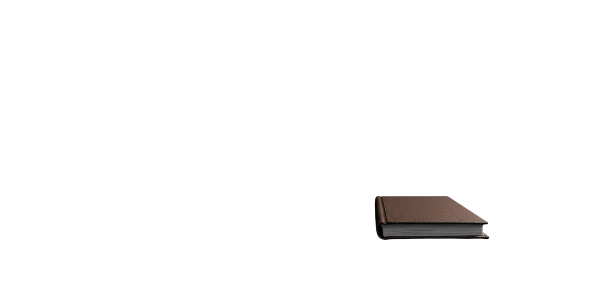
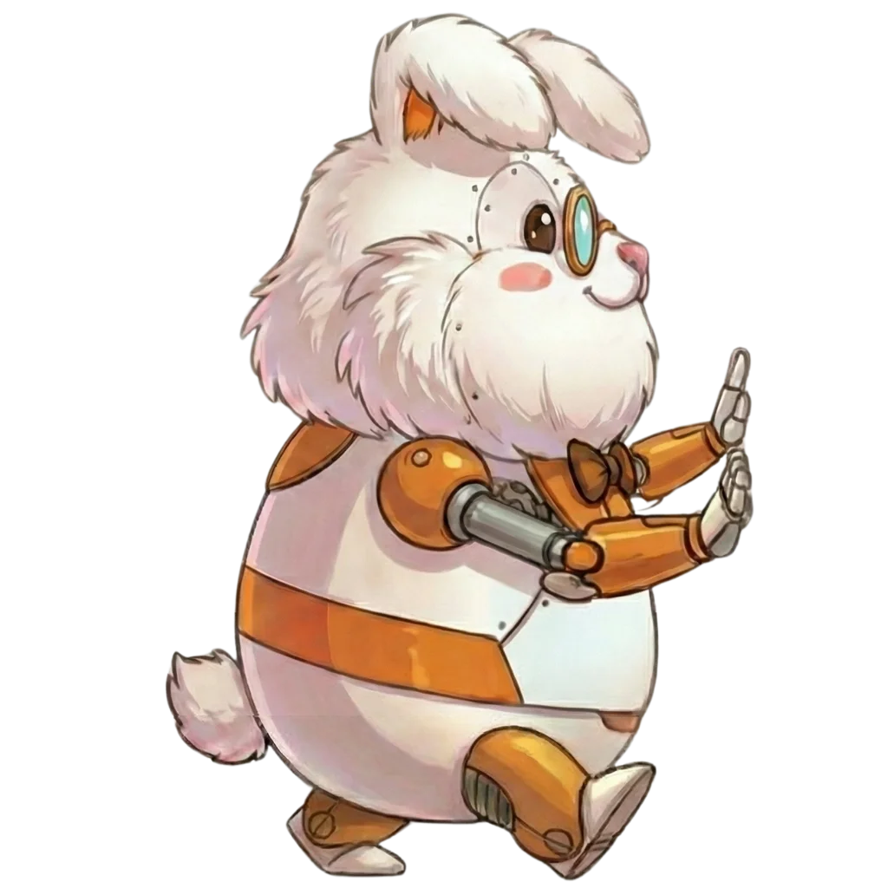
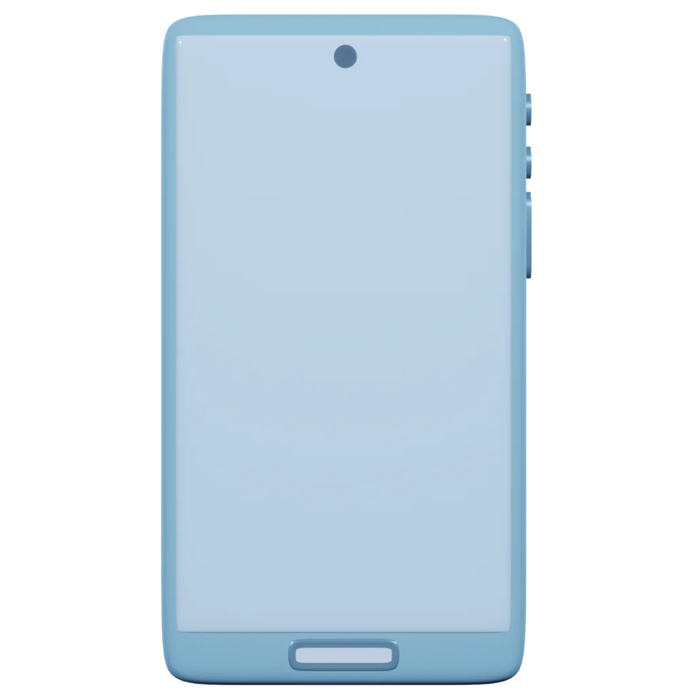
cautas — for counselors
…… 心当たり、ありませんか？
予定を入れるだけで、場所・URL・電話番号を緑のロボが自動で紐付け。
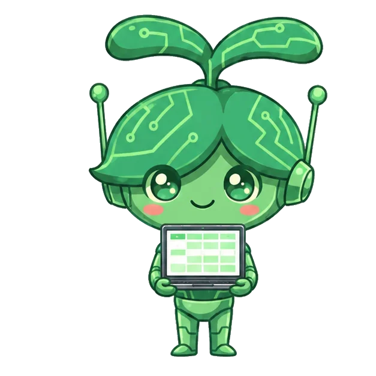
クライアント情報も過去の記録も、アプリを開けばすぐそこに。
白うさぎが音声をそのまま文字に。あなたの手は空いたまま。
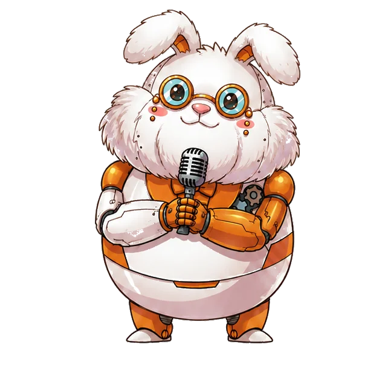
振り返りはAIにおまかせ。あなたは確認するだけ。
ピンクのロボが請求書を作成。未請求もひと目でわかる。
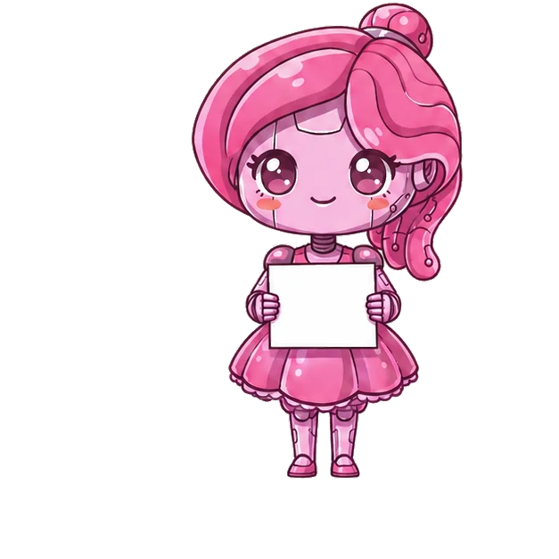
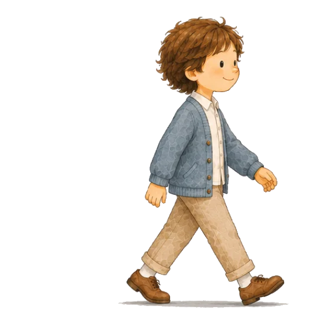
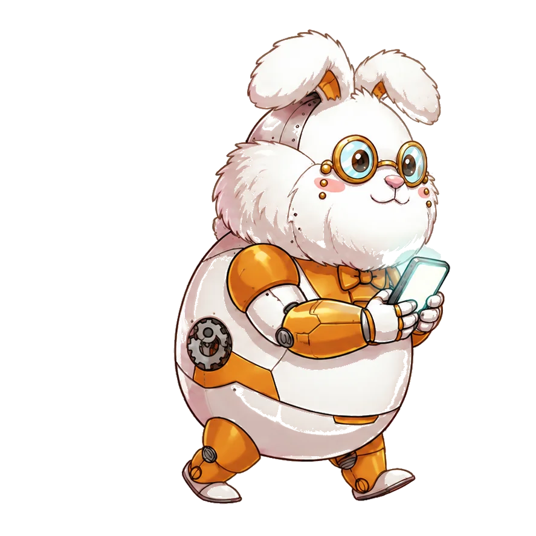
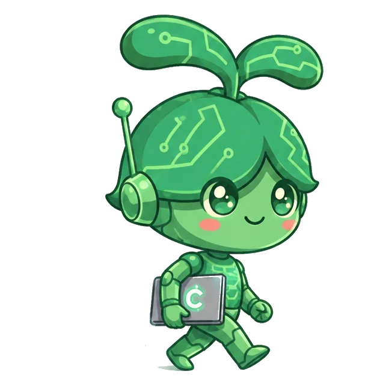
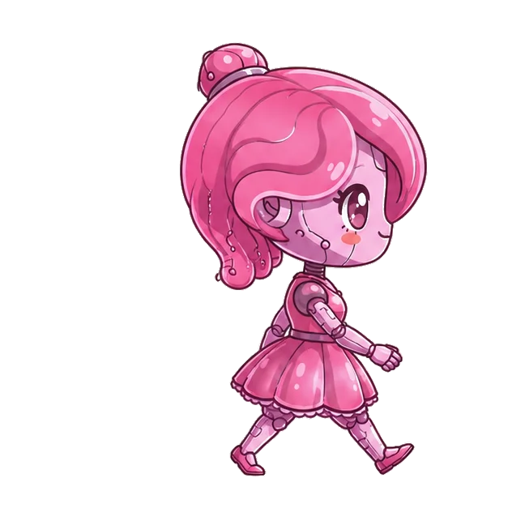
終わらない事務作業に、追われる毎日。
予定・場所・URL・クライアント情報が一枚に。緑のロボが揃えて待っています。
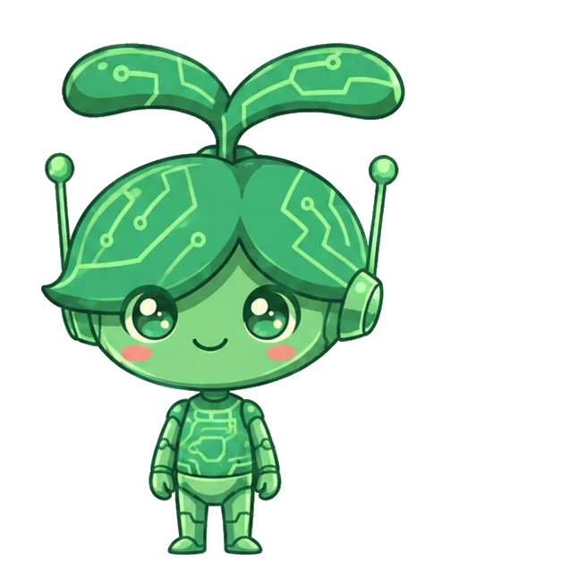
セッションの記録は白うさぎにおまかせ。音声がそのまま言葉になります。
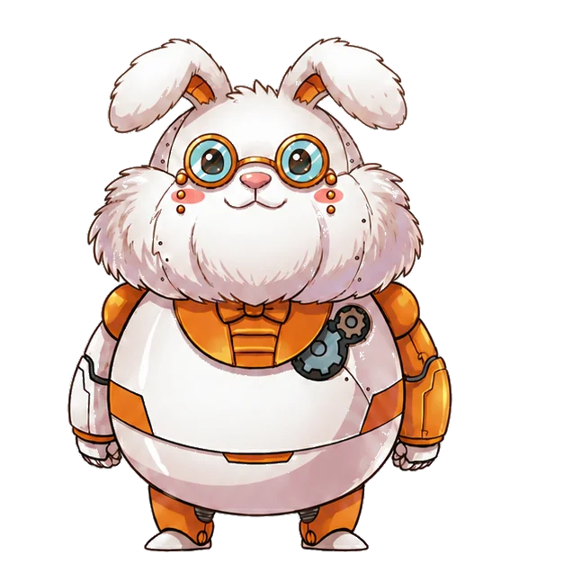
実績はカウント済み。請求書も1ポチ。あとは、ゆっくり休むだけ。
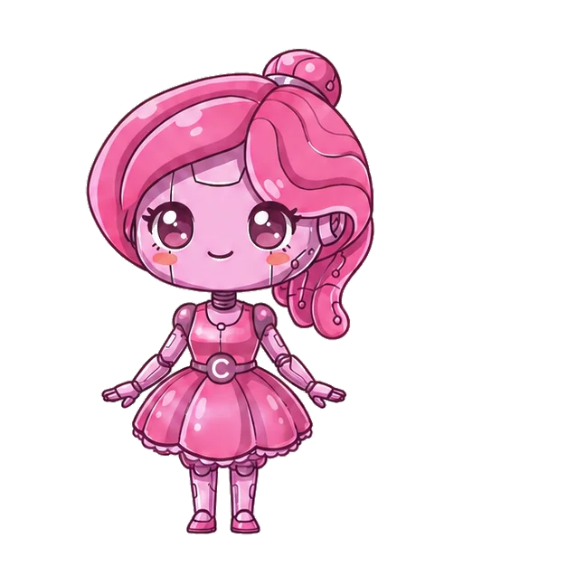
でも、もう
戻らなくていい。
「予定を入れたら、場所もURLも全部ここに」
「話すだけで記録。書く時間はもういらない」
「振り返りはAIにおまかせ」
「数えなくていい。見れば分かる」
「1ポチで請求書。漏れも防げる」
まず無料で試せます（料金プランは準備中）
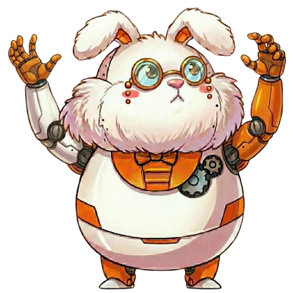
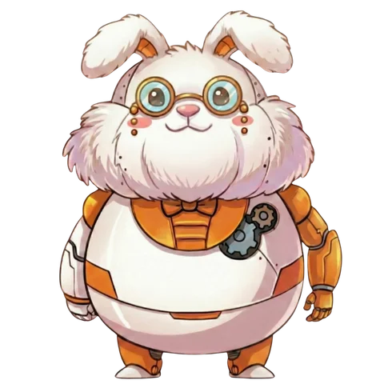
─ おしまい ─